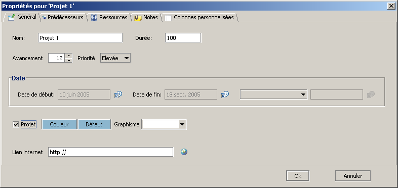
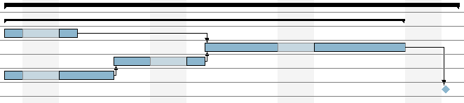

Gestion multi-projet
GanttProject permet de gérer simultanément plusieurs projets.
L'utilisation la plus commune est d'importer succéssivement plusieurs projets et d'indiqué à GanttProject
quels sont les projets :
- importer un nouveau projet (menu Projet, Importer) ;
- accepter l'ajout des tâches au projet en cours ;
- si les tâches du projet importé sont toutes sous une même tâche mère, éditer
les propriétés de cette tâche :

- cocher la case Projet ;
- valider.
- si les tâches du projet importé ne sont pas toutes sous une même tâche mère :
- ajouter une tâche ;
- la déplacer juste au dessus la tâche du projet la plus haute dans le tableau
en utilisant le bouton Monter
 ;
;
- indenter toutes les tâches du projet (sauf la nouvelle tâche) en utilisant
le bouton Indenter
 ;
;
- la nouvelle tâche devient une tâche mère, il suffit de la définir comme Projet, comme expliqué
plus haut.
Voici un exemple :

Les tâches qui sont représentées comme projet ressemblent aux tâches mère, mais sont plus épaisses.